- 8 شهریور 1386
اعضا و حامیان در نخستین سالگرد کمپین یک میلیون امضا:
گزارش تصویری : راحله عسگری زاده
- 6 شهریور 1386
كنفرانس مطبوعاتي سالگرد كمپين يك ميليون امضا
- 5 شهریور 1386
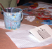
نمایشگاه نقاشی «همه مادران من » در فرهنگسرای بهمن، 4 تا14
- 20 مرداد 1386
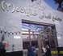
سميه رشيدي
- 8 مرداد 1386
فریبا داوودی مهاجر
- 27 تیر 1386
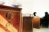
گزارشي از دادگاه خانواده:
مريم مالك
- 23 تیر 1386
روجا بندری /کالیفرنیا
- 27 خرداد 1386
- 23 خرداد 1386
مريم حسين خواه/ عكس:راحله عسگري زاده، سارا لقمانی
- 8 اردیبهشت 1386
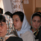
فرناز سیفی / عکس : الناز ناطقی
- 21 فروردین 1386
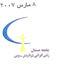
پریسا انصاری
- 8 فروردین 1386
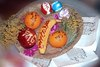
جلوه جواهری
- 4 فروردین 1386
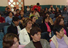
- 25 اسفند 1385
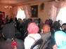
فاطمه دهدشتی/ عکس: راحله عسگری زاده
- 24 اسفند 1385
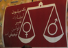
مهیار استوار
- 22 اسفند 1385
منیره برادران
- 19 اسفند 1385
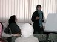
راحله عسگری زاده
- 16 اسفند 1385
آيا يک زن کارگر حاضر است هوو بپذيرد؟/مهتاب مقیمی
- 10 اسفند 1385
به جای این کارها بشین بچه ات رو بزرگ کن !/ زینب پیغمبرزاده
- 30 بهمن 1385
نشست روابط عمومی کمپین در تهران با برخی فعالان جنبش زنان
ناهید جعفری
- 30 دی 1385
نشست مشترک زنان اصلاح طلب و اعضای کمپین
مریم حسین خواه
- 28 دی 1385
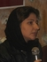
در نشست پیگیری داوطلبان کمپین یک میلیون امضا عنوان شد:
جلوه جواهری
- 20 دی 1385
گزارش از: كميسيون زنان تحكيم وحدت
- 16 دی 1385
گزارش:گلناز ملک/ عکس ها: راحله عسگری زاده
- 24 آذر 1385
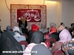
- 15 آذر 1385
گزارش عملكرد سه ماههي نخست فعاليت كمپين يك ميليون امضاء
پروين اردلان
- 11 آذر 1385
مریم حسین خواه
- 1 آذر 1385
- 30 آبان 1385
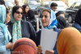
- 29 آبان 1385
زهره امین